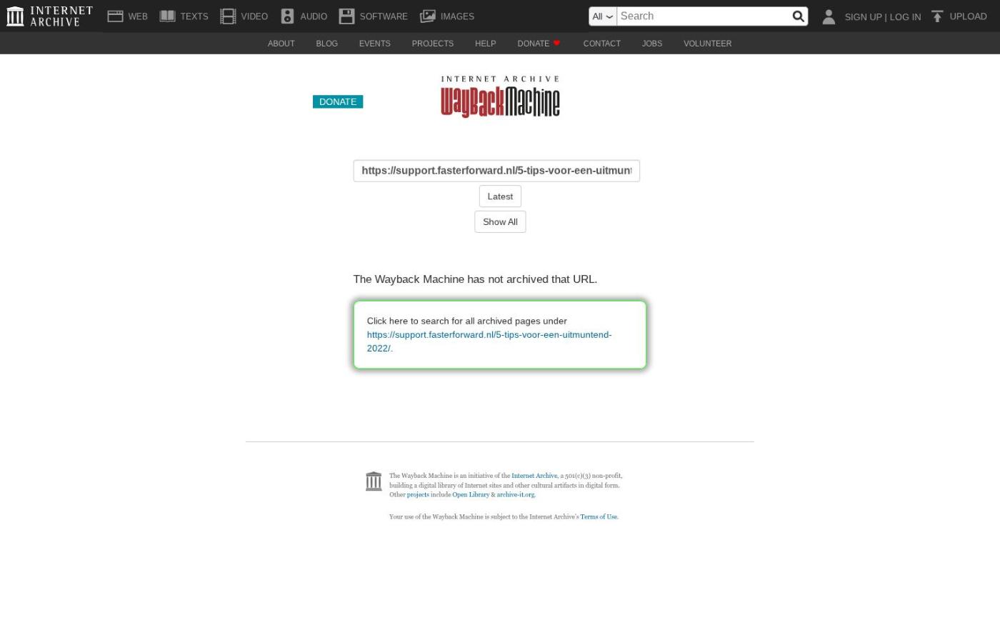

Uitgaande e-mail versturen via Office 365, export naar Adviesbox online verbeterd en meer
Op dinsdag 1 april zijn Elements en eBlinqx weer verbeterd en uitgebreid met nieuwe features. Deze release bevat onder andere uitgaande e-mails versturen via uitgaande server Office 365 en de oorzaak weer terug in de schademelding. Ook zijn er nieuwe features alleen voor eBlinqx, bijvoorbeeld export naar Adviesbox Online verbeterd en gemakkelijk klanten exporteren naar Yes-co.
- eBlinqx Only
- Export naar Adviesbox Online
- Controle geldigheid document in eBlinqx
- Tabblad Mutaties verduidelijkt
- Gemakkelijk relatie exporteren naar Yes-co
- Font eBlinqx aangepast
- Elements en eBlinqx
- Uitgaande e-mail versturen via Office365
- Batchverwerking blijft doorlopen ondanks foutieve batch
- Oorzaak terug in schademelding
- Servicecontracten goed weergegeven op factuur
- Vernieuwde techniek Ockto geïntegreerd
- Overige verbeteringen
- eBlinqx Only
- Export naar Adviesbox Online
Let op: alleen beschikbaar in eBlinqx
Vanaf nu is het niet langer meer nodig om het .hbx bestand handmatig te uploaden in Adviesbox Online. In eBlinqx kies je onder het tabblad Adviesbox voor Adviesbox Online. Vervolgens exporteer je het .hbx bestand gemakkelijk naar Adviesbox Online om vanuit daar het dossier te importeren en direct te starten met het opstellen van het advies. Voor deze koppeling is er inrichting in Adviesbox Online en eBlinqx nodig. Hier lees je er meer over.
Controle geldigheid document in eBlinqx
Let op: alleen beschikbaar in eBlinqx
In eBlinqx wordt nu, naast Uwkluis, ook de geldigheidsdatum van het identiteitsbewijs gecontroleerd. Indien het document niet geldig is dan wordt er een melding getoond in de stukkenlijst, het scherm van het stuk beoordelen en bewerken. In Soort Documenten Beheer geef je aan welke documenten je automatisch wilt laten controleren. Indien er een verschil zitten tussen de aangeleverde gegevens identiteitskaart en dat wat in eBlinqx staat dan verschijnt hiervan een melding. Via het tabblad Mutaties kan je deze wijzigingen doorvoeren. Voor nu is deze controle alleen nog op het identiteitsbewijs. In een latere release zullen andere documenten aan deze functionaliteit toegevoegd worden met als volgende de werkgeversverklaring.
Tabblad Mutaties verduidelijkt
Vanuit Uwkluis en eBlinqx vindt er een controle plaatst op de geldigheid van documenten. Wanneer er een verschil zit tussen de NAWTE-gegevens van het document en dat wat in eBlinqx staat dan verschijnt er een melding. Het verschil kan je bekijken in het tabblad Mutaties. Dit tabblad is visueel verduidelijkt. Daarnaast kan je een keuze maken in welke gegevens je wel wilt aanpassen in eBlinqx en welke niet.
Gemakkelijk relatie exporteren naar Yes-co
Let op: alleen beschikbaar in eBlinqx
Vanuit eBlinqx exporteer je nu gemakkelijk de relatie naar Yes-co. Dit vanuit het klantdossier tabblad Export – Yes-co. Op deze manier hoef je de klant niet dubbel in te voeren en kan je direct vanuit Yes-co met de klant aan de slag. Wil je gebruik maken van deze koppeling? Stuur dan een e-mail naar support@fasterforward.nl.
Font eBlinqx aangepast
Let op: alleen beschikbaar in eBlinqx
Het lettertype in eBlinqx is aangepast naar het font Metropolis. Dit zie je door heel eBlinqx terug, bijvoorbeeld in de header, tabbladen en de namen van modules. Dit heeft geen invloed op bijvoorbeeld jouw huisstijl en standaard correspondentieteksten.
- Nieuwe font
- Oude font
- Elements en eBlinqx
- Uitgaande e-mail versturen via Office365
Vanaf nu is het mogelijk, als je gebruik maakt van Office365, om de e-mails die je verstuurt vanuit Elements of eBlinqx via de uitgaande server van Office365 te versturen. Dit heeft als voordeel dat je in Office365, bijvoorbeeld op je mobiel, de verzonden items terug ziet. Daarnaast is het niet meer nodig om de DKIM, SPF en DMARC in te stellen.
Via de e-mailmanager kan je dit per e-mailbox instellen. Je zet dan het veld 'Verstuur via Office 365' op 'Ja'. Bij het aanpassen van de verzendmethode wordt de authenticatie automatisch ingetrokken. In de e-mailmodule verschijnt er in deze mailbox een oranje melding. De gebruiker dient de mailbox opnieuw te authentiseren via deze melding.
Wanneer het een shared (sub)mailbox betreft dan dient deze instelling in het hoofdaccount ingesteld te worden. Ook de autorisatie intrekken en opnieuw authentiseren zal moeten gebeuren bij het hoofdaccount in de e-mailmanager. De instelling geldt dan direct voor alle subaccounts. Het kan zijn dat er aanpassingen gedaan moeten worden in de instellingen van Office365 voor de subaccounts. Neem hiervoor contact op met jouw ICT-beheerder.
In eBlinqx en Elements komt er voor de ingestelde mailbox een extra map bij, namelijk 'Verzenden mislukt'. Hierin kan je de e-mails terugvinden, waarbij het niet gelukt is om deze via de de uitgaande server van Office365 te verzenden. Ook kan je ze opnieuw verzenden vanuit daar.
Batchverwerking blijft doorlopen ondanks foutieve batch
Vanaf nu wordt de batchverwerking niet meer geblokkeerd vanwege een foutieve batch. Het kan zijn dat de verwerking van de batch vastloopt door bijvoorbeeld een ongeldige PFUNK code of het niet aanwezig zijn van de boekhoudkundige periode. Voorheen hield deze batch de verwerking van alle andere batches tegen. Deze bleven dan in de wachtrij staan. Nu is dit niet meer het geval. Alleen de de foutieve batch blijft in de wachtrij staan en het wordt visueel zichtbaar dat deze niet verwerkt kan worden. De andere batches worden gewoon verwerkt.
Oorzaak terug in schademelding
Sinds de vorige release zijn de oorzaken in de schademelding vervangen voor de schadeclassificaties. Er is een zoekfilter toegevoegd om het zoeken in deze lijst te verbeteren. Echter de schadeclassificaties kunnen te specifiek of juist niet toereikend zijn. Daarom hebben we een nieuw veld met oorzaken toegevoegd aan de schademelding. Dit is een vaste lijst die wordt bepaald vanuit SIVI. Met het toevoegen van dit veld is de schadeclassificatie niet langer meer verplicht.
Servicecontracten goed weergegeven op factuur
Vanaf nu worden de servicecontracten juist weergegeven op de TP incasso factuur. Boekhoudkundig verliep dit al correct, alleen visueel werd het niet juist op de factuur weergegeven. De bedragen worden nu correct getoond en ook is de terminologie aangepast. Zo klopt de opbouw van de factuur en is het duidelijk vanuit waar het totaalbedrag is opgebouwd.
Vernieuwde techniek Ockto geïntegreerd
Ockto gebruikt een vernieuwde techniek voor het versturen van ODM berichten. Deze techniek hebben we geïntegreerd in eBlinqx en Elements. Functioneel verandert er niets.
Overige verbeteringen
Wij hebben diverse verbeteringen voor onze interne conversietool doorgevoerd. Hierdoor wordt de doorstroom van de conversies verbeterd
Via de updateknop hebben we de nieuwe producten Scildon Lifestyle Hypotheek ORV aangeboden
Het is nu ook mogelijk om het document verblijfsvergunning te ondertekenen voor gezien
Vanuit het tabblad Figlo kan je Figlo Advisor of Figlo Start openen. Achter deze knoppen zitten nu aparte rechten, waardoor het mogelijk is één van deze knoppen niet te tonen
De rapportage CRM – Overzicht schademeldingen is uitgebreid met de kolommen 'Aantal openstaande taken' en 'Polisnummer'. Wil je deze kolommen zien, zet ze dan aan in Rapportagebeheer
Er zijn diverse API uitbreidingen doorgevoerd. Hier vind je de betreffende wijzigingen terug
- Laatste 5 releasenotes
- Nog meer data en documenten vergelijken »
- Gemakkelijk data en documenten vergelijken »
- Verbeteringen boekhouding en facturatie »
- Verbeteringen gespreksopname en onder de motorkap »
- Verbeteringen onder de motorkap en gespreksopnames »
Afbeeldingen bij dit artikel


Schermafbeelding van de oorspronkelijke pagina

Bron: Wayback Machine-archief